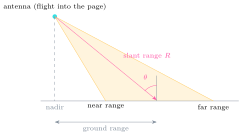

Definition
- Azimuth: the flight direction (along track).
- Range: across track. Slant range
 is the distance along the line of sight; ground range its projection on the ground.
is the distance along the line of sight; ground range its projection on the ground. - Near range / far range: the edges of the swath closest to and farthest from the track.
- Look angle (at the antenna) and incidence angle
 (at the ground, between the beam and the local normal) change across the swath.
(at the ground, between the beam and the local normal) change across the swath.
Hardware: transmitter, duplexer (switches the antenna between transmit and receive), receiver, antenna.
Why side-looking
Range separation needs different delays. With a nadir-looking radar two points A and B at equal distance on the two sides of the track return simultaneously: ambiguity. Illuminating only one side removes it; points at different ground ranges have different slant ranges.
Picture

, from near to far range; slant range projects onto ground range.Worked example
Altitude  km, look angles from 20° (near) to 45° (far), flat Earth approximation:
km, look angles from 20° (near) to 45° (far), flat Earth approximation:
- near range: ground distance km, slant range km;
- far range: km, slant range km.
Swath on the ground 445 km; echoes from the swath arrive between ms and ms after each pulse, so the pulse repetition interval must exceed 1.6 ms to avoid range ambiguities.
Intuition
The radar measures distances, not angles: the image is a map of "how far" against "when along the track".
Pitfall
In slant-range geometry the ground is compressed at near range relative to far range; images must be projected to ground range before measuring distances.